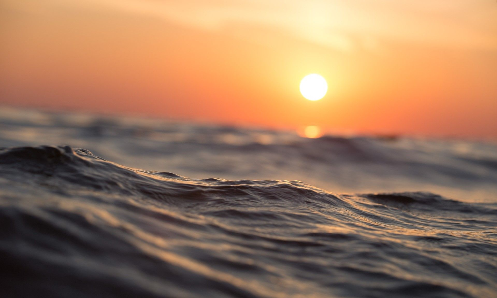

Save Our Sea
What can you do to help?
If you want to work alone, you can...

If you want to help another way, you join or donate to an organization such as these...

Thanks for making our ocean a better place!